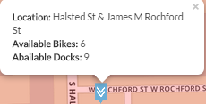
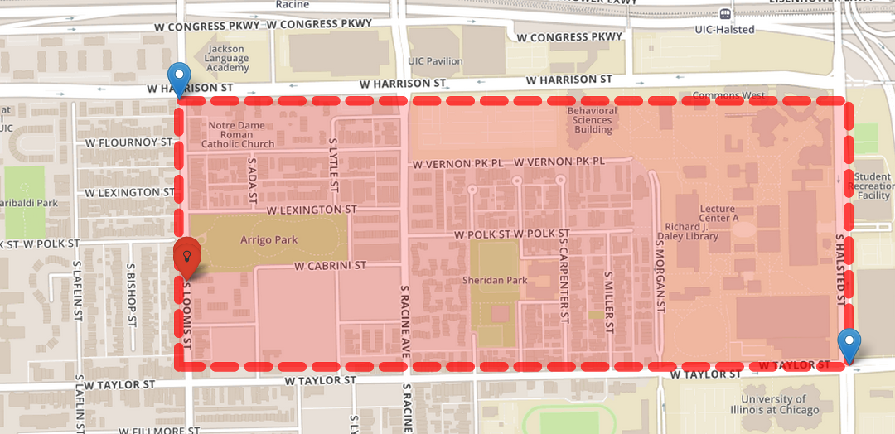
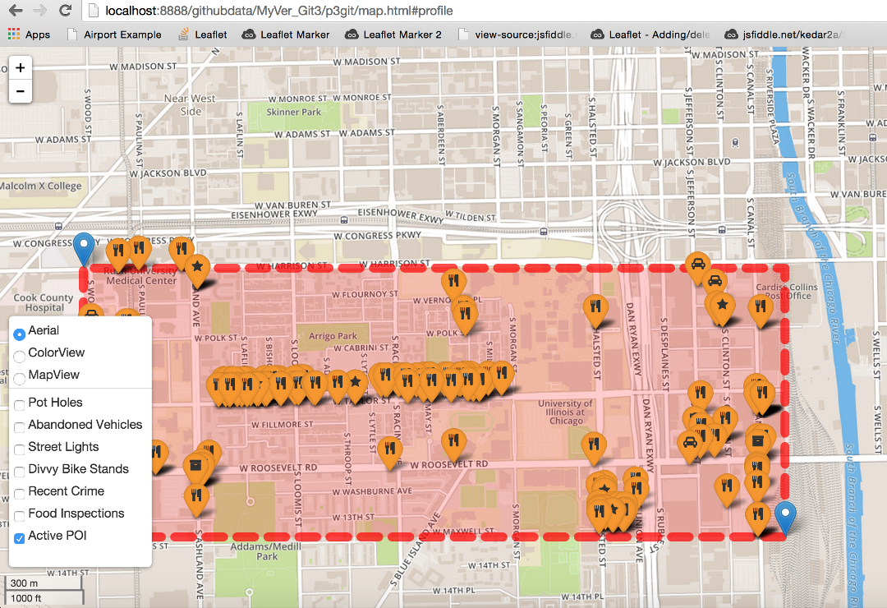
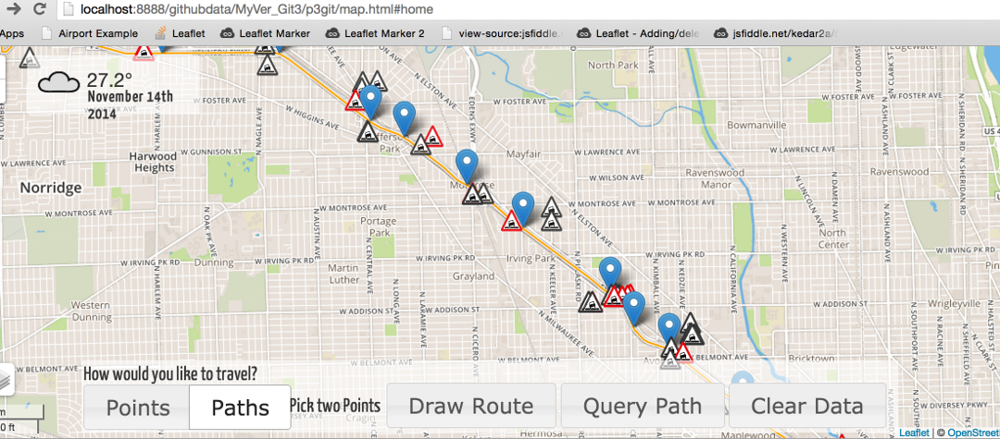

Right Here! Right Now! is the third project in the course CS 424: Visualization and Visual Analyticsunder Prof. Andrew Johnson at University of Illinois at Chicago(UIC). The project is continuation of the ongoing focus of the class on demographics and communities in Chicago, Illinois. Project 3 is called Right Here! Right Now! as our primary focus this time is 311 Data offered by the City of Chicago alongside public transit systems available to the public and how to efficiently show that data to the user and let the user filter information from it.
Please check out the video of the application running :
Project 3: CS424 P3 Home
About the Project
Right Here! Right Now! is the third project in the CS 424 : Visualization and Visual Analytics course at University of Illinois at Chicago(UIC). The focus of the project is to make an interactive application displaying the 311 data available from city of Chicago and also the various transit systems like CTA Bus System and Divvy Bike Sharing System.
The goal of the project was to create an application which can be used by an user to travel through and discover Chicago in the best possible way. To aid the user to make decisions, we give the user various types of relevant data. The data is split into various layers which can be toggled on and off so that the user always has the control over what he/she wants to explore. The Layers on our application are various types of 311 data, Divvy Bike Stations and CTA Tracker. We wanted to give the user the option of not only able to decide if his/her interests but also discover new places of interest. Along with the various points of interest, We wanted to give the user option of seeing the various public transit systems around his point of interest.
Listed below are the various types of views the user can show from.
- Various Types of 311 Data
- Crime Commited
- Reported PotHoles
- Abandoned Vehicles
- Broken StreetLights
- Food Inspection
- Modes of Transit
- CTA Bus Tracker This tracker gives information about
- Divvy Bike Sharing Service
- Active Point of Interests
- Restaurants & Taverns & Special Event Food
- Music and Dance Places
- Mobile Food License
- Outdoor Patio
- Package Goods
- Public Garage
- Public Place of Amusement
- Other Information
- Current Weather
- Sunrise and Sunset Functionality
- Current Time
At the same time, the user may or may not care about overall city of Chicago and may be concerned about seeing information only in a certain community/neighbourhood of Chicago or maybe want to check whats available near by. For this specific purpose, We have incorporated various modes in our application. The user can choose to view information of the below given modes.
- Modes
- Path Mode
- Box Mode
The user picks his start and ending destination points and we give the user the route along major streets. We have designed the application in such a manner that the user can even choose the path he/she wants to take by simply dragging the path and it automatically routes to the new route. To keep the data relevant, we have chosen a 2 block radius to show data along the path created. This way the user can know whether that particular route is safe or not and can actually compare between routes.
The user picks two points and the user will be able to see data in the selected box. The boundary shows the selected region. This allows the user to see data in a much larger area and see what is around and about.
Along with the different layers, we have visualizations for all the 311 data which allows the user to quickly see if the statistics of the selected area versus the statistics of city of chicago. The visualizations are broken down into last week and last month so that the user can see a trend between different times and between the area and the city itself.
We have tried to create the application from an user's point of view and tried to incorporate things which would help the user navigate and discover new points of interest and in general give the user a sense of how the city is in the selected area. 311 data is a big deal in Chicago and it being public is a huge plus. Through our application , we hope that users have a more usable and friendly interface to access this and discover this beautiful city of Chicago.
Team Members:
Sharad Tanwar

Sharad worked specifically on map features like implementation of the different layers and routing- box and path. He also worked on restriction of data through use of SodaAPI Queries and restriction of data in path mode. He also helped out in creating visualizations.
Shahbaz Khan

Shahbaz worked on visualizations needed for statistics in the project. Shahbaz worked on documentation of the overall project and design decisions. He also implemented icons and color designs for various layers.
Christopher Thomas
Christopher worked worked on graphs and documentation needed for the project
__mt__
Michael worked majorly on the UI elements and the design decisions of the overall project. He also implemented the refresh functionality of the complete project and notification center to display any new information coming up. He also implemented with leaflet routing machine and worked out chinks in the application.
How-To
The following is an immersive step-by-step look into the use of the application, along with a look at all its features.
Once you're on the application, you'll land on the following page, with the default view as displayed above.
The first thing to notice is the control panel on the right
- This is where you can find the layer control. You can use it to toggle the following layers:
- Recent Crimes (Shows reported crimes in the last month within the drawn boxed area or, around the drawn path)
- Streetlights Out (Shows reported streetlights not working within the last month within the drawn boxed area or, around the drawn path)
- Abandoned Cars (Shows abandoned cars in the last month within the drawn boxed area or, around the drawn path)
- Reported Potholes* (Shows reported potholes in the last month within the drawn boxed area or, around the drawn path)
- Divvy Bike Stations (Shows Divvy stations within the drawn boxed area or, around the drawn path)
- Restaurants/Bars (Shows restaurants and bars within the drawn boxed area or, around the drawn path)
- Food Inspections (Shows food inspections for eateries in the last 4 months within the drawn boxed area or, around the drawn path)
- Local Weather* (Shows local weather in the area)
- CTA Bus Tracker (Shows the location of CTA busses within the drawn boxed area or, around the drawn path)
- This is where you can toggle between different map views. The different views available are:
- Ariel View
- Color View
- Map View
- This is where you choose between having a box vs. path implementation
[path routed to see the update window]
This is the update window. This is where the updates on the data show up as they are reflected in the map.

This is the weather Layer which is toggled ON by default. It shows the current temperature, the kind of weather and, the date.
This is the sidebar which lets you show/hide the control panel and the chart view box. You can also use it to zoom in/out on the map and, clear any selections previously made and, press the "?" button for help.
Right under the Weather Box display, you are able to access the twitter module
- Press the "Twitter Data" button. This will open up a dropdown with the 15 latest relevant tweets.
- Each tab shows the 5 latest tweets for Crime, 311 and, Food, separately
There are two ways to display the information from the various layers Firstly, as shown above, the user can choose to display layer information within a user-constricted area. The steps to do so are:
- Choose Marker 1
- Choose Marker 2
- Press the "Draw a Box" button to geographically restrict information displayed to the selected area.
Secondly, as shown above, the user can choose to display layer information within a 2 block radius of the path generated by the Leaflet Routing Machine between two user inputted markers. The steps to do so are:
- Choose Marker 1
- Choose Marker 2
- Press the "Draw a Path" button to geographically restrict information displayed around the path generated by the Leaflet Routing Machine
Additionally, for the path implementation of the application, because the Leaflet Routing Machine creates a path between two user defined points automatically, the application also lets the user re-route according to their preferences. The user may, for example, want to avoid certain areas that according to the map, have higher crime activity. The way to do so is:
- Drag the route to wherever you would like to reroute through
- Press the "Update Route button" to update the data being displayed
LAYER CONTROL:
Reported Potholes
The first layer, the one that is toggled on by default is the one for "Reported Potholes." This displays the reported potholes within the confined box (as shown above) or, around a drawn path. The layer displays 2 variations of the icon to let the user distinguish between potholes reported within the last 2 weeks vs. those reported in the last month.
- The pothole icon with the red trimming marks potholes reported within the last 2 weeks.
- The pothole icon with the black trimming marks potholes reported within the last month.
Every marker has information about the pothole bound to it. On clicking on a mapped icon, a popup specifies:
- Date (when the pothole was reported)
- Status (whether or not the inquiry has been completed)
- Message to user regarding whether or not the pothole has been filled
Recent Crimes
The "Recent Crimes" layer, when toggled ON, displays the reported crimes within the confined box (as shown above) or, around a drawn path.
The layer displays 2 variations of the icon to let the user distinguish between crimes reported within the last 2 weeks vs. those reported in the last month.
- The crimes icon with the black trimming marks recent crimes reported within the last month
- The crimes icon with the red trimming marks recent crimes reported within the last 2 weeks
Every marker has information about the crime bound to it. On clicking on a mapped icon, a popup displays:
- Date Reported (when the crime was reported)
- Description (The primary description of the crime, as it was reported)
- Street (The street address of where the crime was reported)
- Message of caution to the user
Abandoned Cars
The "Abandoned Cars" layer, when toggled ON, displays the reported abandoned cars within the confined box (as shown above) or, around a drawn path. The layer displays 2 variations of the icon to let the user distinguish between crimes reported within the last 2 weeks vs. those reported in the last month.
- The abandoned vehicle icon with the red trimming marks abandoned vehicles reported within the last 2 weeks
- The abandoned vehicle icon with black trimming marks abandoned vehicles reported within the last month
Every marker has information about the crime bound to it. On clicking on a mapped icon, a popup displays:
- Date Reported (when the abandoned vehicle was reported)
- Status (Whether or not the inquiry is still open or has been closed)
- Street (The street address of where the abandoned vehicle was reported)
- Message of caution to the user
Streetlights Out
The "Streetlights Out" layer, when toggled ON, displays the reported streetlights outage within the confined box (as shown above) or, around a drawn path. The layer displays 2 variations of the icon to let the user distinguish between outages reported within the last 2 weeks vs. those reported in the last month.
- The streetlights out icon on the red marker marks streetlights out reported within the last 2 weeks
- The streetlights out icon on the black marker marks streetlights out reported within the last month
Every marker has information about the streetlights outage bound to it. On clicking on a mapped icon, a popup displays:
- Date Reported (when the streetlight outage was reported)
- Status (Whether or not the inquiry is still open or has been closed)
- Street (The street address of where the outage was reported)
- Message indicating whether or not the lights were fixed
Divvy Bike Stations
The "Divvy Bike Stations" layer, when toggled ON, displays the divvy bike stations within the confined box (as shown above) or, around a drawn path. The layer gets refreshed every __ seconds so real time changes are reflected in the application.
The divvy stations are marked on the map with the divvy logo.
Every marker has information about the crime bound to it. On clicking on a mapped icon, a popup displays:
- Location (where the station is located)
- Available Bikes (the number of bikes currently available at the station)
- Available Docks (The number of free docks available to park the bikes)
Points of Interest
The "Points of Interest" layer, when toggled ON, displays the POIs within the confined box (as shown above) or, around a drawn path. The layer shows markers for the following:
- Taverns
- Eateries
- Packaged Goods (ie. groceries, alcohol etc.)
- Outdoor attractions (i.e. outdoor attractions and public places of amusement)
- Garages
- Musical destinations
The eateries are marked on the map with the above logo.
The packaged goods places are marked on the map with the above logo.
The taverns are marked on the map with the above logo.
The garages are marked on the map with the above logo.
The outdoor attractions are marked on the map with the above logo.
Every marker has information about the POI bound to it. On clicking on a mapped icon, a popup displays:
- Name (name of the establishment)
- Type (the type of the establishment)
- Street (street address)
Food Inpsections
The "Food Inspections" layer, when toggled ON, displays the food inspections for the last 4 months within the confined box (as shown above) or, around a drawn path. The layer shows markers for the following:
- Failed Inspections
- Passed Inspections
- The red thumbs-down icon marks places that failed their food inspections within the last 4 months
- The blue thumbs-up icon marks places that passed their food inspections within the last 4 months
- Restaurant name (name of the inspected restaurant)
- Inspection Date
- Status (pass/fail)
- Risk Level (a rating of the level of risk from 1-3 with 1 being the worst)
- Street Address
CTA Bus Tracker
The "CTA Bus tracker" layer, when toggled ON, displays the CTA busses within the confined box (as shown above) or, around a drawn path.
The layer gets refreshed every 30 seconds because of API's daily limit. Real time changes are thus, a little delayed and cannot be seen as a smooth animation, as was intended.
If the CTA Bus Tracker API limit has been reached for the day, the application will display the error displayed above!
The bus icon marks the location of the bus within 30 seconds of its actual location.
Every marker has information about the CTA bus tracking bound to it. On clicking on a mapped icon, a popup displays:
- Route (route the bus is currently serving)
- Route time (the time/date the data was pulled
- Next stop (the next stop the bus )
- Risk Level (a rating of the level of risk from 1-3, 1 being the worst)
- Street (street address)
VISUALIZATIONS:
The application displays 4 visualizations, according to what the developers thought would be best information to add to the application.
- The visualization can be accessed by pressing the chart button on the sidebar, as indicated
- By default, the user can only see 2 of the visualizations because the intention is to keep the map in maximum view at all times, the user can, however, press the indicated link to expand the visualization module in order to see all 4 visualizations at once
Once the "more graphs" link is pressed, the visualization module expands as shown above. This is revertible by pressing the "less graphs" link that would replace the "more graphs" link once it is pressed.
- 1. The first graph displays the number of reported streetlight outages in Chicago vs. the user selected area (SA) or in the area around the user selected path. The user is able to see the streetlight outages, for both Chicago and the SA in a bi-weekly vs. monthly breakdown.
- 2. The second graph displays the number of reported recent crimes in Chicago vs. the user selected area (SA) or in the area around the user selected path. The user is able to see the recent crimes, for both Chicago and the SA in a bi-weekly vs. monthly breakdown.
- 3. The third graph displays the number of reported potholes in Chicago vs. the user selected area (SA) or in the area around the user selected path. The user is able to see the reported potholes, for both Chicago and the SA in a bi-weekly vs. monthly breakdown.
- 4. The fourth graph displays the number of reported abandoned vehicles in Chicago vs. the user selected area (SA) or in the area around the user selected path. The user is able to see the abandoned vehicles, for both Chicago and the SA in a bi-weekly vs. monthly breakdown.
Interesting Findings
- Though abandon vehicles seem to be prevalent around the city, there is a ring around downtown, particularly pronounced on the near south side, where these cars don't exist or have been cleared.

- The Hamlin Park / North Center area (from Belmont to Montrose between Western and Ashland) seems to be one of the few areas in the city that excells at keeping their streetlights on:

- Crime reports are much more evenly distributed around the city than we expected them to be. From believing the accepted stereotypes, we would expect crime to be much worse in certain areas than others, but that does not seem to be the case:
- Food inspections seem to be noticably more positive on the southside:
- Divvy Stations near the UIC Campus see movement at night even when we have red car service available.
- There are a lot of out of business places near UIC Campus which is surprising as you would like that proximity to a huge clientele would be a major boost to business
- Major Food Inspection Failure Culprits are major Restaurant Chains 1. McDonalds : They had the distinction of multiple failures.
- Some of the Places we love near UIC have failed the food inspection too 1. Jimmy Johns


2. Chipotle

3. Pot Belly

4. Jamba Juice

5. 7 Eleven
2. Mario's Lemonade Stand
3. AMC Theatre

4. Peete's Coffee Shop

5. Subway
Some Indian Places have failed this too.
`
Project Data Sources
Soda API
Soda API is the API for all the 311 data being used for this project. Each layer had to be shown on the map and had to be sub-divided on the basis of two different times- last week and last month which made sense as it had to be relevant to the user using the application. Along with showing data subdivided based on time, each marker on the map also shows various tidbits on each layer.
The objective of the project was to display the Following are the data sources which are being fulled using Soda API.- Reported PotHoles
- Date of Report
- Status: Fixed or Open
- Street Location of the Pothole
- A Customized message either warning about the pothole or wishing a safe trip!
- Reported Abandoned Vehicles
- Location : Intersection at which the station is situated
- Available Bikes
- Available Docks
- Reported Crime in Chicago
- Date of Report
- Description of the Crime
- Scene of the Crime
- A Customized Message warning the user
- Reported StreetLights Out
- Date of Report
- Status: Completed or Open
- Street at which the call was made for
- Customized Message
- Food Inspection
- Points of Interest
- Public Garages
- Taverns
- Packaged Goods
- Special Food Events
- Navy Pier Events
- Music Shops
- Bars
- Restaurants
- Public Place of Amusement
- Name of the Establishment
- Street
- #Chicago #Crime
- #Chicago #Food
- #Chicago #311
- Food
- 311
- Crime
Potholes Layers show the following tidbits :
- Abandoned Layer show the following tidbits:
- Reported Crime in Chicago
- Different Points of Interests being showed.
Divvy Bike Data
CTA Bus Tracker
weather underground API
The Weather Data is being sourced from Weather Undeground and we are using the API with current location as Chicago and the temperature is shown in Fahrenheit. We have also shown the Weather images besides the temperature itself to give a more visual feel to the user. People respond better to images and can relate better to the weather if they have weather icons alongside the temperature. The icons take into account the time and even the sunset and sunrise timings when bringing up the icons.
Third Party Libraries
d3
d3.js is the library used to do the visualizations and parsing the dates for last week and last month.leaflet
leaflet-sidebar
jquery (layout + UI only)
jquery UI (layout + UI only)
bootstrap (layout + UI only)
font awesome icons
We have used these icons to show markers on the map. They play super nice with leafet and you can extend them to show up with different colors and icons as needed.
To know more please goto FONT AWESOME
moment.js
Jason Mayes Twitter API
We have utilized Jason Mayes Twitter API to show data for three hashtags :
This has been achieved through creating twitter widgets and calling the API to show data for each hashtag. We can show and hide images but we choose not to show images because of size constraints. The API also allows us to reply, retweet and make tweets as favorites if the user has logged into his/her twitter account. The API allows us to do that straight from the application itself. Also, we limited the application to show the top 5 tweets at a time as we are not allowed to scroll.
Source Code
Installation Instructions
The beauty of using Javascript and its respective libraries is that no extra tools or utilities or any huge integrated development environment is needed to run our project.
There is some work done on the server side, but because this application requires internet access regardless, we let our server do that work for you. Of course, if you want to see the work that our server does or interact with it, you can look at the included app.py file which is a simple cherrypy appliction.
Of course, if all you want to do is download and run the application, you can do that with no trouble! Please follow the following steps to go from start to set.
- Please read the how to use page for getting the best out of the application.
- Download the application by running:
git clone https://github.com/trustdarkness/righthererightnow.git - Then cd into the project directory (usually righthererightnow) and type:
python -m SimpleHTTPServer - You can now access the application on your local machine at
http://localhost:8000 - Although the application would run in any modern web browser, We recommend that latest version of Google Chrome should be used to run the application. You can download Chrome here
https://github.com/trustdarkness/righthererightnow
Team Members:
Sharad Tanwar
First Week - Implemented Map Functionality to have zoomable and pannable map of Chicago with BaseLayers and Overlays.
- Added rudimentary Weather Functionality(Subject to Change)
- Working on CTA Bus Tracker
- Implemented the box functionality to restrict view according to user selection.

- Implemented rudimentary polyline functionality to enable user to see data along the path selected.

- Potholes
- Abandoned Cars

- Street lights


- Recent Crime


- Food Inspection Details

- Points of interest

- Implemented Icons for each layer to denote significance
Second Week
- Implemented CTA Bus Tracker Layer
- New Routing Implementation for Path Mode



- Fixed Markers for some layers
Shahbaz Khan
- Made new icons for potholes/traffic lights/recent crime/abandoned vehicles - each of them has 3 opacity settings so the appropriate one can be used in accordance to the recency of the crime. Also looking into Bootstrap icon components to best replace the current ones.- Looking into making visualizations using bar charts + . Deciding on the relevant metrics to display to avoid unnecessary information clutters.
Christopher Thomas
- GraphsMichael Thompson
- Streetwise routing (leaflet routing machine)- Weather interface
- Implemented python backend for limiting divvy data by geographic location
- Added divvy layer querying functionality
- User interface styling and organization
Second Week
- Layer Control
- UI Controls: zoom, toggles, help, map layers, and box and path control. - Weather querying and updating:
- Graph Controls and layout:
 - Divvy Bike front/backend and location limiting:
- Divvy Bike front/backend and location limiting: - Refresh, "Live" updating:
- Refresh, "Live" updating: - Leaflet routing machine integration (with Sharad)
- Leaflet routing machine integration (with Sharad)